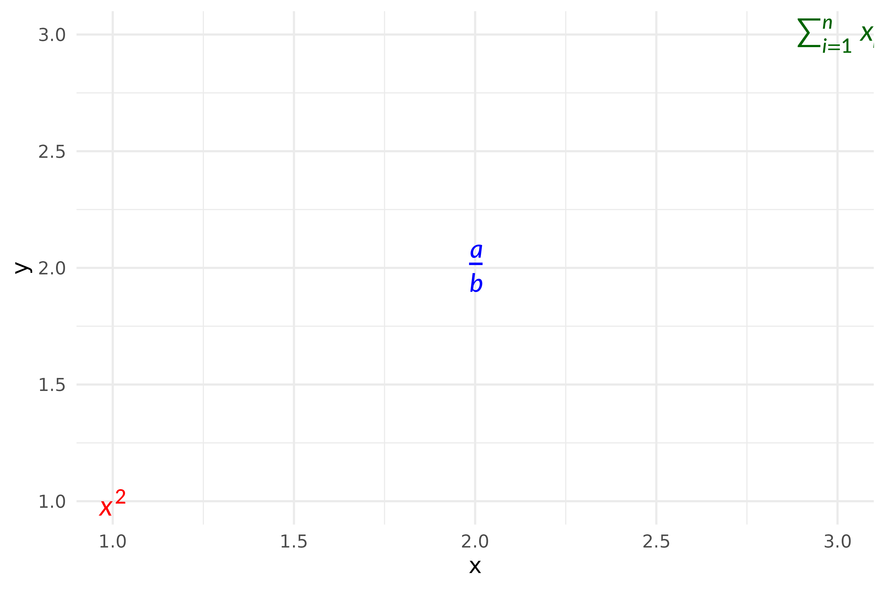
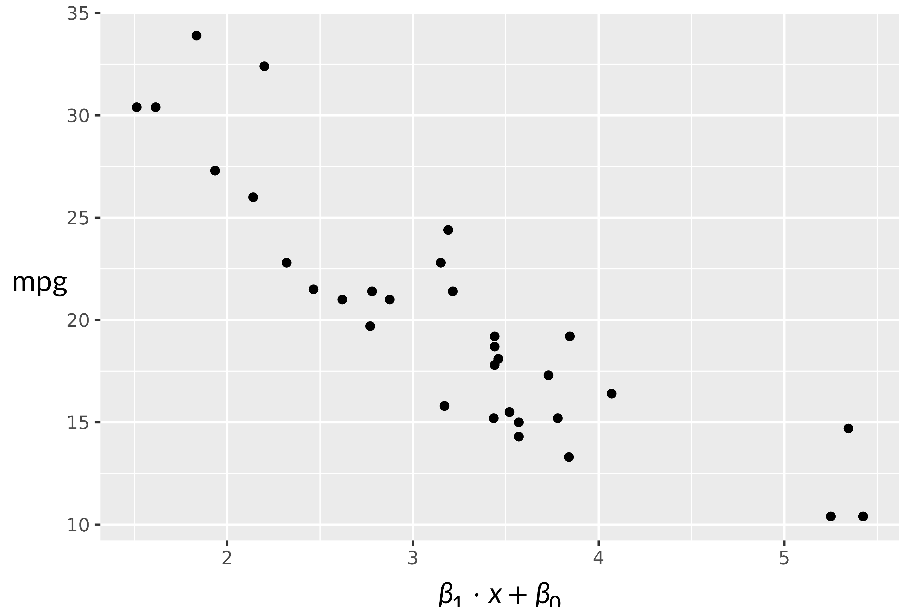
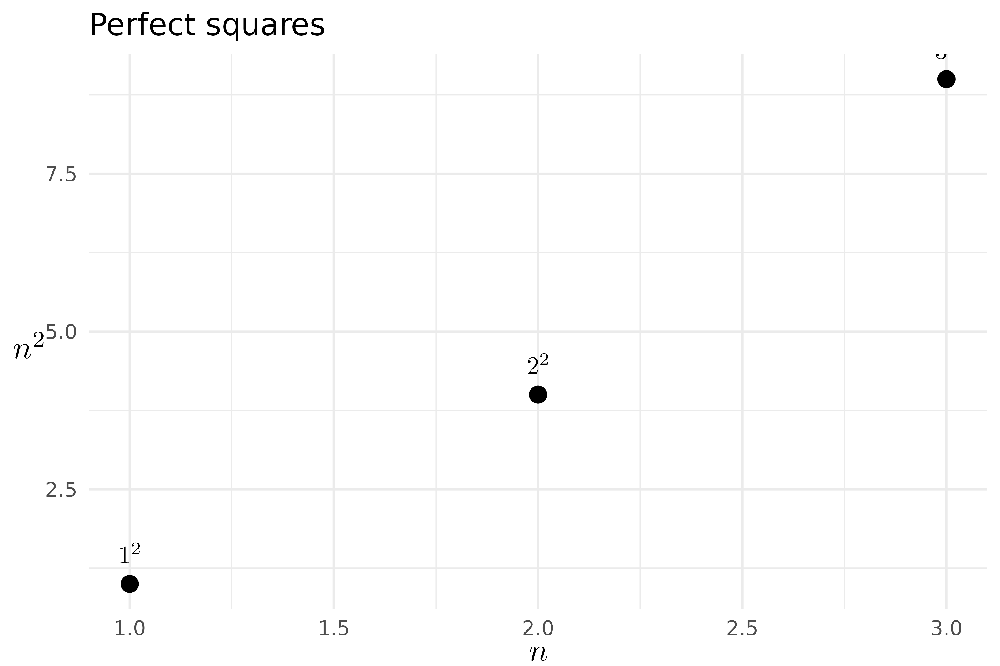

gridmicrotex provides two ggplot2 extensions for rendering LaTeX math in plots:
-
geom_latex()— a geom layer for placing LaTeX labels at data coordinates. -
element_latex()— a theme element for rendering axis titles, plot titles, and other text elements as LaTeX.
Annotating plots with geom_latex()
geom_latex() works like geom_text() but
interprets the label aesthetic as a LaTeX math string.
df <- data.frame(
x = 1:3,
y = 1:3,
eq = c("x^2", "\\frac{a}{b}", "\\sum_{i=1}^n x_i")
)
ggplot(df, aes(x, y, label = eq)) +
geom_latex() +
theme_minimal()
Controlling size and colour
Map the size (font size in points) and
colour aesthetics as usual:
df$col <- c("red", "blue", "darkgreen")
ggplot(df, aes(x, y, label = eq, colour = col, size = c(14, 18, 14))) +
geom_latex() +
scale_colour_identity() +
scale_size_identity() +
theme_minimal()
Adding equation annotations to a scatter plot
A common use case is annotating a regression fit with the model
equation. Use annotate("latex", ...) for single annotations
— it delegates to GeomLatex internally but avoids creating
a data frame and automatically hides the legend.
fit <- lm(mpg ~ wt, data = mtcars)
b0 <- round(coef(fit)[1], 1)
b1 <- round(coef(fit)[2], 1)
r2 <- round(summary(fit)$r.squared, 3)
eq_label <- sprintf("\\hat{y} = %s %s x, \\quad R^2 = %s",
b0, b1, r2)
ggplot(mtcars, aes(wt, mpg)) +
geom_point() +
geom_smooth(method = "lm", se = FALSE) +
annotate("latex", x = 4, y = 30, label = eq_label, size = 12) +
theme_minimal()
#> `geom_smooth()` using formula = 'y ~ x'
LaTeX axis titles with element_latex()
element_latex() replaces a text theme element so that
its label is rendered as LaTeX math.
ggplot(mtcars, aes(wt, mpg)) +
geom_point() +
labs(
x = "$\\beta_1 \\cdot x + \\beta_0$",
y = "$\\mathrm{mpg}$"
) +
theme(
axis.title.x = element_latex(fontsize = 14),
axis.title.y = element_latex(fontsize = 14)
)
Dollar-sign delimiters ($...$) are stripped
automatically, so both "\\frac{a}{b}" and
"$\\frac{a}{b}$" produce the same output.
Combining both extensions
You can use geom_latex() and
element_latex() together:
df <- data.frame(
x = c(1, 2, 3),
y = c(1, 4, 9),
eq = c("1^2", "2^2", "3^2")
)
ggplot(df, aes(x, y, label = eq)) +
geom_point(size = 3) +
geom_latex(vjust = -1, fontsize = 14) +
labs(
x = "$n$",
y = "$n^2$",
title = "Perfect squares"
) +
theme_minimal() +
theme(
axis.title.x = element_latex(fontsize = 14),
axis.title.y = element_latex(fontsize = 14)
)